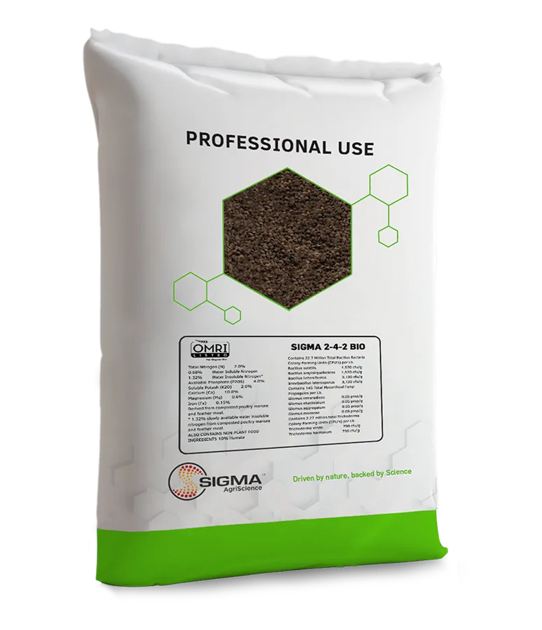

OMRI LISTEDLarge Grade
Sigma 2-4-2 Bio 2x
Sigma’s base formula containing 100% organic and natural ingredients plus twice the concentration of biological additions compared to other dry formulas. Organic minerals such as carbon and humic acids work together to strengthen root growth and overall plant health. Apply “as is” or dry blend with conventional fertilizers to maximize performance.
2N4P2K
Details